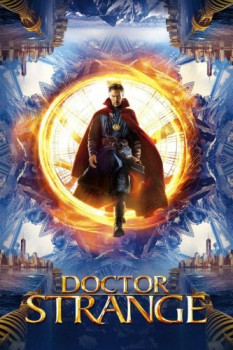

Country:United States, 115 minutes
Spoken languages:English
Genres:Fantasy, Adventure, Action
Director(s):Scott Derrickson
Writer(s):Jon Spaihts, Scott Derrickson, C. Robert Cargill
Video Codec:Unknown
Number: 1577

Certification:PG-13
Storyline:
After his career is destroyed, a brilliant but arrogant surgeon gets a new lease on life when a sorcerer takes him under her wing and trains him to defend the world against evil.
Cast:
Benedict Cumberbatch (as Dr. Stephen Strange), Chiwetel Ejiofor (as Mordo), Rachel McAdams (as Dr. Christine Palmer), Benedict Wong (as Wong), Mads Mikkelsen (as Kaecilius)
Medium: Media file,
Location: D:\Comic Book Super Heros\Marvel's The Avengers Movie Collection\Doctor.Strange.2016.mp4
Loaned: No
Aspect ratio: Unknown